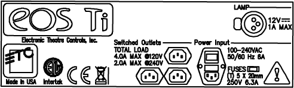

CAUTION: For continued protection against risk of fire, replace only with same type and rating of fuse.
CAUTION: Pour ne pas compromettre la protection contre les risques d’incendie, remplacer par un fusible de même type et de mêmes caractéristiques nominales.
Fuse replacement information and additional electrical ratings can be found on this label located on Eos Ti’s rear panel.
